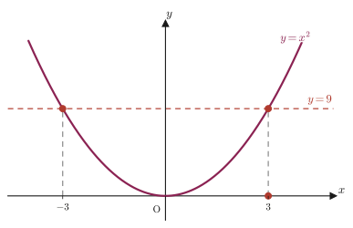

Chapter 1Logic and Sets
“Mathematics is built from sentences that are definitely either correct or incorrect”—this property, which seems so obvious, is exactly what makes the practice of proof possible. In mathematics up through junior high school, the emphasis was on memorizing formulas and computing numerical values. From high school mathematics onward, however, we increasingly need to answer the question “Why does that formula hold?” by deriving it logically from facts already known to be correct—that is, by giving a proof. And in university mathematics (such as $\varepsilon$-$\delta$ arguments and proofs of theorems in linear algebra), almost all of the text consists of proofs. This chapter lays the foundation for that—that is, it sets up the rules of language for handling “correct” and “incorrect.”
We begin with the concept of a proposition—a sentence or formula whose correctness or incorrectness is clearly determined. Next we study the ideas of a necessary condition and a sufficient condition, which arise when two propositions are joined by “if … then” ($\Rightarrow$), and the three derived propositions that can be made from a proposition: the converse, inverse, and contrapositive. The contrapositive is the first proof technique one meets in high school mathematics—“take a proposition that is hard to prove directly, replace it with another, logically equivalent proposition, and prove that instead”—and it is an idea used again and again in every proof from university onward. Finally, we translate these words of logic into the language of sets. “$p$ is a sufficient condition for $q$” and “the collection of things satisfying $p$ is contained in the collection of things satisfying $q$” are in fact nothing more than two ways of saying the same thing. Once we notice this correspondence, logic and sets become a single, connected tool.
- The definition of a proposition, and what it means to be true or false
- The definitions of necessary conditions and sufficient conditions, and an intuitive understanding of them through diagrams of inclusion relations (Venn diagrams)
- The definition of a necessary and sufficient condition (equivalence)
- How to form the converse, inverse, and contrapositive, how their truth values relate to that of the original proposition, and the method of proof using the contrapositive
- Basic terminology of sets (element $\in$, subset $\subset$, intersection $\cap$, union $\cup$, empty set $\emptyset$) and the symbols that denote sets, such as the set of all real numbers $\R$
- The idea of the truth set determined by a condition, and how it lets us restate necessary conditions and sufficient conditions as “inclusion relations”
- How to read the universal quantifier $\forall$ (“for all”) and the existential quantifier $\exists$ (“there exists”), and what they mean
Source notes: Yasuhide Mochizuki, Mathematics Notes: High School Mathematics (handwritten lecture notes, in Japanese), pp. 1–2.
Note: From Section 1.5 (Basics of Sets) onward, the content is not in pp. 1–2 of the original notes; it has been added to show the connection between logic and sets.
1.1 Propositions
Let us compare the following three sentences.
- “$2+3=5$”
- “$x$ is a large number”
- “For every natural number $n$, $n^2+n$ is even”
Statement 1 is correct (anyone can see that $2+3=5$). Statement 3 is also correct (as we will verify later). Statement 2, however, can be called neither correct nor incorrect, because it has not been determined how large “large” is supposed to be. Only sentences and formulas like Statements 1 and 3, whose correctness or incorrectness is clearly determined, are objects that mathematics deals with.
Definition 1.1: Proposition
A statement that is expressed by a sentence or formula and whose correctness or incorrectness is clearly determined is called a proposition.
When a proposition is correct, we say that the proposition “is true”; when a proposition is incorrect, we say that it “is false.” In the example above, Statements 1 and 3 are true propositions, and Statement 2 is not a proposition at all (because it is vague).
Intuition: Propositions always carry a hidden “$\forall$ (for all)”
Statement 3 is written with the phrase “for every natural number $n$.” This is the universal quantifier $\forall$ (pronounced “for all”; it means “every”) written out in words. From now on, we read $\forall n$ as “for all $n$.” Similarly, for an assertion such as “there exists at least one $n$ satisfying a certain condition,” we use the existential quantifier $\exists$ (pronounced “exists”; it means “there exists”). We will take up these symbols again in Section 1.5, but when a statement is phrased with its subject left out, as in “a proposition about a real number $x$,” you can generally take it that “$\forall x\in\R$” (for every real number $x$) has been omitted.
Let us verify that Statement 3, “For every natural number $n$, $n^2+n$ is even,” is true. Factoring gives $n^2+n=n(n+1)$. Since $n$ and $n+1$ are two consecutive integers, one of them is even and the other is odd. The product of an even number and an odd number is always even, so $n(n+1)$, that is, $n^2+n$, is always even. In this way, checking a single example is not enough; a proof is what demonstrates that the statement holds in every case.
Example 1.1: Identifying propositions
Among (a)–(d) below, select all those that are propositions, and for each one that is a proposition, determine whether it is true or false.
(a) $2+3=5$.
(b) It will probably be sunny tomorrow.
(c) For every natural number $n$, $n^2+n$ is even.
(d) $5$ is a multiple of $3$.
Solution. (a) Since $2+3=5$ is settled as correct by computation, it is a proposition, and it is true.
(b) “It will probably be sunny” is not determined at present to be correct or incorrect (the future weather is uncertain, and moreover the speculative wording “probably” in itself does not settle truth or falsity), so it is not a proposition.
(c) As shown in the main text, $n(n+1)$ is the product of two consecutive integers, so it is always even. Hence it is a proposition, and it is true.
(d) The division $5\div 3$ does not come out even ($5=3\times1+2$), so $5$ is not a multiple of $3$. Hence it is a proposition, and it is false.
1.2 Necessary Conditions and Sufficient Conditions
The form “$p\Rightarrow q$” (“if $p$, then $q$”; $p$ implies $q$), which joins two propositions with “if … then,” is also a proposition. For example, the proposition about a real number $x$
$$ x=3 \;\Rightarrow\; x^2=9 $$is true (substituting $x=3$ does indeed give $x^2=3^2=9$). In this case, the fact that $x=3$ is a sufficient condition for $x^2=9$ to hold—because as soon as we know that $x=3$, that alone guarantees that $x^2=9$. Seen from the other direction, the fact that $x^2=9$ holds is a necessary condition for $x=3$—for if $x^2=9$ did not hold, it could not possibly be that $x=3$ (however, the fact that $x^2=9$ holds does not necessarily mean that $x=3$: $x=-3$ also satisfies $x^2=9$).
Definition 1.2: Necessary conditions and sufficient conditions
When the proposition “$p\Rightarrow q$” is true, we say that
- $p$ is a sufficient condition for $q$, and
- $q$ is a necessary condition for $p$.
This is the terminology we use.
This relationship is easier to remember if you understand it through a picture in which the collection of things satisfying $p$ is completely contained in the collection of things satisfying $q$ (we treat this “collection” rigorously as a set in Section 1.5).
Intuition: Why is the “contained” one the sufficient condition?
Suppose that circle $A$ is contained inside circle $B$. If a point lies inside circle $A$, then that alone automatically puts it inside circle $B$ as well. In other words, the information “it is inside $A$” by itself guarantees that “it is inside $B$”—this is what “$A$ is a sufficient condition for $B$” means. Conversely, the information “it is inside $B$” alone does not determine whether the point is inside $A$ (inside $B$ there are also parts that lie outside $A$). However, to be inside $A$, a point must at least be inside $B$ (since $A\subset B$). This is what “$B$ is a necessary condition for $A$” means.
Let us visualize this correspondence with the graph of the parabola $y=x^2$ that we saw earlier.

Example 1.2: Determining whether a condition is necessary or sufficient
Consider the proposition “$x\gt 2 \Rightarrow x\gt 0$” about a real number $x$. (a) Verify that this proposition is true. (b) What kind of condition is $x\gt 2$ for $x\gt 0$? (c) Is the converse proposition $x\gt 0 \Rightarrow x\gt 2$ true or false? Give a reason for your answer.
Solution. (a) Every real number satisfying $x\gt 2$ is greater than $2$, so of course it is greater than $0$. Hence the proposition is true.
(b) By (a), $x\gt 2 \Rightarrow x\gt 0$ is true, so by Definition 1.2, $x\gt 2$ is a sufficient condition for $x\gt 0$.
(c) It is false. A counterexample is $x=1$: this value satisfies $x\gt 0$ but does not satisfy $x\gt 2$. Therefore $x\gt 0$ is not a sufficient condition for $x\gt 2$, and in the reverse sense of (b) it is not a necessary condition either (this does not upset the relation in (b), namely that the necessary condition for $x\gt 2$ is, after all, the $x\gt 0$ side).
1.3 Necessary and Sufficient Conditions (Equivalence)
In the previous section we saw that even if $p\Rightarrow q$ is true, its converse $q\Rightarrow p$ is not necessarily true ($x\gt2\Rightarrow x\gt0$ is true, but its converse was false). So what happens when both $p\Rightarrow q$ and $q\Rightarrow p$ are true?
Definition 1.3: Necessary and sufficient conditions and equivalence
When the two propositions $p\Rightarrow q$ and $q\Rightarrow p$ are both true, that is, when
$$ p \Leftrightarrow q $$holds, we say that $p$ is a necessary and sufficient condition for $q$, and that $p$ and $q$ are equivalent to each other.
To say that $p\Rightarrow q$ is true and $q\Rightarrow p$ is also true means that the collection of things satisfying $p$ and the collection of things satisfying $q$ coincide exactly. It is not the case that only one of them contains the other (as in the figure of the previous section, where a small circle lies inside a larger one); rather, think of it as the state in which the two circles lie exactly on top of each other.
For example, “being an equilateral triangle” and “having three sides of equal length” are equivalent. If either one holds, the other necessarily holds as well, and the converse holds too. In this way, when we “rephrase” a definition or a property, the relationship of a necessary and sufficient condition is usually what is being used.
Example 1.3: Checking a necessary and sufficient condition
For a real number $x$, verify that the proposition $p$: “$x^2-5x+6=0$” and the proposition $q$: “$x=2$ or $x=3$” are equivalent.
Solution. Factoring $x^2-5x+6$ gives
$$ x^2-5x+6=(x-2)(x-3) $$(The sum of $-2$ and $-3$ is $-5$ and their product is $6$; searching for two numbers with this sum and product, we find $-2,-3$, so we can write $x^2-5x+6=(x+(-2))(x+(-3))=(x-2)(x-3)$.) A product is $0$ only when at least one of its factors is $0$, so
$$ x^2-5x+6=0 \iff (x-2)(x-3)=0 \iff x-2=0 \text{ or } x-3=0 \iff x=2 \text{ or } x=3 $$Hence both $p\Rightarrow q$ and $q\Rightarrow p$ are true, and therefore $p$ and $q$ are equivalent.
1.4 Converse, Inverse, and Contrapositive
Given a single proposition $p\Rightarrow q$, we can mechanically produce three new propositions from it. The symbol $\bar p$, the letter $p$ with a bar drawn over it, stands for “not $p$” (the negation of $p$).
Definition 1.4: Converse, inverse, and contrapositive
For a proposition $p\Rightarrow q$, we define the following three propositions:
- Converse: $q\Rightarrow p$ (swap the hypothesis and the conclusion)
- Inverse: $\bar p\Rightarrow \bar q$ (negate the hypothesis and the conclusion separately)
- Contrapositive: $\bar q\Rightarrow \bar p$ (take the converse first, and then negate further)
These three propositions are called the converse, the inverse, and the contrapositive, respectively.
Taking the proposition “$x=1 \Rightarrow x^2=1$” (true) about a real number $x$ as an example, let us check what the converse, the inverse, and the contrapositive each become, and whether each of them is true or false.
$$ \begin{align} \text{Converse:}\quad & x^2=1 \Rightarrow x=1 && (\text{false; counterexample } x=-1) \nonumber\\ \text{Inverse:}\quad & x\neq 1 \Rightarrow x^2\neq 1 && (\text{false; counterexample } x=-1) \nonumber\\ \text{Contrapositive:}\quad & x^2\neq 1 \Rightarrow x\neq 1 && (\text{true}) \label{eq:1-converse-example} \end{align} $$Note that the counterexample that makes both the converse and the inverse false is the same, $x=-1$. When $x=-1$, we have $x^2=(-1)^2=1$, so $x^2=1$ is true, but $x=1$ itself, the crucial part, is false. Therefore, for the converse “$x^2=1\Rightarrow x=1$”, the hypothesis ($x^2=1$) is true while the conclusion ($x=1$) is false, and so the converse is judged to be false. The inverse “$x\neq1\Rightarrow x^2\neq1$” is likewise false for the same $x=-1$: the hypothesis ($x\neq1$; $-1\neq1$ is true) is satisfied, but the conclusion ($x^2\neq1$) is not satisfied (since $x^2=1$, the statement $x^2\neq1$ is false). On the other hand, for the contrapositive “$x^2\neq1\Rightarrow x\neq1$”, every real number satisfying $x^2\neq1$ (for example $x=0,2,-5,\dots$) is not $1$, so $x\neq1$ always holds, and the contrapositive is true.
Point: Proof using the contrapositive
To prove a proposition $p\Rightarrow q$, we may instead prove its contrapositive $\bar q\Rightarrow\bar p$.
Point: Beware of the truth value of the converse
The converse of a true proposition is not necessarily true.
Summarizing the relationships among these four propositions (the original proposition, the converse, the inverse, and the contrapositive) in a diagram gives the following. Two propositions joined by a diagonal (the original proposition and the contrapositive; the converse and the inverse) always have the same truth value.
Why does the contrapositive have the same truth value as the original proposition?
The proposition $p\Rightarrow q$ is false in exactly one case, namely “$p$ is true and yet $q$ is false.” (When $p$ is false, the convention is to regard $p\Rightarrow q$ as true, on the grounds that “since the premise does not hold, nothing is being claimed.”)
Let us examine the contrapositive $\bar q\Rightarrow \bar p$ in this situation. Since $q$ is false, $\bar q$ (“not $q$”) is true, and since $p$ is true, $\bar p$ (“not $p$”) is false. That is, the contrapositive fails in exactly the same way—“the hypothesis ($\bar q$) is true and yet the conclusion ($\bar p$) is false”—and so it is also false.
Conversely, consider the case in which $p\Rightarrow q$ is true. This is the case in which at least one of the following holds: $p$ is false, or $q$ is true. Let us check the contrapositive $\bar q\Rightarrow\bar p$ in each case. If $p$ is false, the conclusion $\bar p$ (“not $p$”) of the contrapositive is true, so $\bar q\Rightarrow\bar p$ has a true conclusion and is therefore true regardless of the truth value of the hypothesis $\bar q$. If $q$ is true, the hypothesis $\bar q$ (“not $q$”) of the contrapositive is false, so for $\bar q\Rightarrow\bar p$ “the hypothesis does not hold,” and it is true (by the convention above). In either case the contrapositive $\bar q\Rightarrow\bar p$ is true. Therefore $p\Rightarrow q$ and $\bar q\Rightarrow\bar p$ always have the same truth value, whatever the combination of truth values of $p,q$. This is what justifies the rephrasing “we may prove the contrapositive instead” (see the Point).
∎
Example 1.4: The converse, inverse, and contrapositive and their truth values (checking the example in the original notes)
For the proposition “$x=1\Rightarrow x^2=1$” about a real number $x$, write down the converse, the inverse, and the contrapositive, and determine whether each is true or false.
Solution. It is as in Eq. \eqref{eq:1-converse-example} of the main text: the converse “$x^2=1\Rightarrow x=1$” is false (counterexample $x=-1$), the inverse “$x\neq1\Rightarrow x^2\neq1$” is false (counterexample $x=-1$), and the contrapositive “$x^2\neq1\Rightarrow x\neq1$” is true. The original proposition “$x=1\Rightarrow x^2=1$” itself is also true, and, as in Figure 1.5, we can confirm that the original proposition and the contrapositive (both true), and the converse and the inverse (both false), are each joined by a diagonal and have the same truth value.
Example 1.5: Proof using the contrapositive
Let $n$ be an integer. Prove the proposition “If $n^2$ is even, then $n$ is even” by using the contrapositive.
Solution. The contrapositive of the original proposition is “If $n$ is not even, then $n^2$ is not even,” that is, “If $n$ is odd, then $n^2$ is odd.” By the Point (see the main text), proving this contrapositive proves the original proposition.
Suppose $n$ is odd. An odd number is “a number that can be written as $n=2k+1$ using some integer $k$,” so
$$ n^2=(2k+1)^2=4k^2+4k+1=2(2k^2+2k)+1 $$can be expanded in this way (we expanded $(2k+1)^2$ in the form $(a+b)^2=a^2+2ab+b^2$, and, using the fact that $4k^2+4k$ is divisible by $2$, factored out the common factor to obtain the form $2\times(\text{integer})+1$). Since $2k^2+2k$ is an integer, $n^2$ is of the form “$2\times(\text{integer})+1$,” that is, odd. Hence “if $n$ is odd, then $n^2$ is odd” (the contrapositive) has been shown, and the original proposition “if $n^2$ is even, then $n$ is even” is also true.
∎
1.5 Basics of Sets — Conditions and Truth Sets
So far we have explained necessary conditions and sufficient conditions with diagrams of “inclusion relations between circles.” In this section we introduce the language of sets, which treats the contents of those circles—that is, “collections of things”—formally as objects of mathematics, and we confirm that logic and sets are in fact saying the same thing in two different ways. The language of sets is the most basic common language, used throughout university mathematics from here on (domains and ranges of functions, $\varepsilon$-$\delta$ arguments, events in probability, and so on).
Definition 1.5: Sets and elements
A collection of objects for which it is clearly determined whether a given object belongs to the collection is called a set. Each individual object that belongs to a set is called an element of that set. The statement that $a$ is an element of a set $A$ is written
$$ a \in A $$and is read “$a$ belongs to $A$” or “$a$ is an element of $A$” (the symbol $\in$ itself is read “in”). That $a$ is not an element of $A$ is written $a\notin A$. A set that has no elements at all is called the empty set and is written $\emptyset$.
A set can be expressed in two ways: by listing its elements, as in $\{1,2,3\}$ (extensional notation), or by writing the condition that the elements must satisfy, as in $\{x\mid p(x)\}$ (intensional notation; it means “all those $x$ that satisfy the condition $p(x)$”). For example, in $\{1,2,3\}=\{x\mid x\text{ is a natural number at most 5 that is neither 4 nor 5}\}$, the same set is expressed in both ways.
The sets used most often when working with numbers have standard symbols. The set of all natural numbers is written $\N$, the set of all integers $\Z$, the set of all rational numbers $\Q$, and the set of all real numbers $\R$ (they come from the initial letters of the English words “natural number,” the German “Zahlen” (“numbers”), “quotient,” and “real number,” respectively). These symbols are used repeatedly in later chapters and in university mathematics materials.
Definition 1.6: Subsets
When every element of a set $A$ is also an element of a set $B$, that is, when
$$ \forall a\ (a\in A \Rightarrow a\in B) $$holds, $A$ is said to be a subset of $B$, and we write $A\subset B$ (the symbol $\subset$ is read “subset of”).
Intuition: Containment of circles is exactly the same thing as A⊂B
The picture we drew in Figure 1.1 and Figure 1.2, in which “the small circle $A$ is entirely contained in the large circle $B$,” is precisely a picture of $A\subset B$. Every element of $A$ (a point inside circle $A$) is also an element of $B$ (it also lies inside circle $B$)—this is exactly the content of Definition 1.6.
Definition 1.7: Intersection and union
For two sets $A,B$,
$$ A\cap B=\{x\mid x\in A \text{ and } x\in B\} $$is called the intersection of $A$ and $B$ (the symbol $\cap$ is read “cap”), and
$$ A\cup B=\{x\mid x\in A \text{ or } x\in B\} $$is called the union of $A$ and $B$ (the symbol $\cup$ is read “cup”).
For example, if $A=\{1,2,3\}$ and $B=\{2,3,4\}$, then the elements belonging to both $A$ and $B$ are $2$ and $3$, so $A\cap B=\{2,3\}$. Also, collecting all the elements that belong to at least one of $A$ and $B$ gives $A\cup B=\{1,2,3,4\}$.
Now let us return to the discussion of necessary conditions and sufficient conditions in Section 1.2. For a condition $p(x)$ on a real number $x$ (for example, “$x=3$”), we call the set of all $x$ that make $p(x)$ true the truth set of the condition $p$.
Theorem 1.1: The relationship between necessary/sufficient conditions and truth sets
For conditions $p,q$, let $P,Q$ be their truth sets, respectively. Then
$$ (\forall x,\ p(x)\Rightarrow q(x)) \iff P\subset Q $$holds. That is, the statement “$p$ is a sufficient condition for $q$” and the statement “the truth set $P$ of $p$ is a subset of the truth set $Q$ of $q$” say the same thing.
Check
Suppose that $p(x)\Rightarrow q(x)$ is true for every $x$. Let $a\in P$; then $a$ satisfies $p$ ($p(a)$ is true). Since $p(a)\Rightarrow q(a)$ is also true, $q(a)$ is true as well, that is, $a\in Q$. Hence $a\in Q$ for every $a\in P$, that is, $P\subset Q$. Conversely, suppose that $P\subset Q$ holds. Then for any $a$ for which $p(a)$ is true, $a\in P\subset Q$ shows that $q(a)$ is also true, so $p(a)\Rightarrow q(a)$ is true for every $a$.
∎
The conclusion confirmed in Example 1.2, “$x\gt2$ is a sufficient condition for $x\gt0$,” is, by Theorem 1.1, exactly the same assertion as the set inclusion “$\{x\mid x\gt2\}\subset\{x\mid x\gt0\}$.” The circle pictures of Figure 1.1 and Figure 1.2 were in fact pictures of this subset relation.
Finally, we define the universal quantifier $\forall$ and the existential quantifier $\exists$ carefully in the language of sets. The statement “for every $x\in A$, the condition $p(x)$ holds” is written $\forall x\in A,\ p(x)$, and the statement “there exists at least one $x\in A$ satisfying $p(x)$” is written $\exists x\in A,\ p(x)$. The proposition seen in Section 1.1, “for every natural number $n$, $n^2+n$ is even,” can be written $\forall n\in\N,\ n^2+n\text{ is even}$.
Caution: The negation of ∀ is ∃, and the negation of ∃ is ∀
The statement “$\forall x\in A,\ p(x)$” being false is the same as “there is at least one $x\in A$ that does not satisfy $p(x)$,” that is, as $\exists x\in A,\ \overline{p(x)}$ being true. Conversely, the statement “$\exists x\in A,\ p(x)$” being false is the same as “every $x\in A$ fails to satisfy $p(x)$,” that is, as $\forall x\in A,\ \overline{p(x)}$ being true. Taking the negation interchanges the universal and the existential.
Example 1.6: Truth sets and inclusion
For the condition $p(x)$: “$x=3$” and the condition $q(x)$: “$x^2=9$” ($x$ is a real number), find the respective truth sets $P,Q$, and verify that $P\subset Q$ holds.
Solution. $P=\{x\mid x=3\}=\{3\}$. To find $Q=\{x\mid x^2=9\}$, it suffices to solve $x^2-9=0$, that is, $(x-3)(x+3)=0$, which gives $x=3$ or $x=-3$. Hence $Q=\{-3,3\}$. The only element $3$ of $P=\{3\}$ is also contained in $Q=\{-3,3\}$, so $P\subset Q$ (Figure 1.6). By Theorem 1.1, this is the same assertion as “$x=3$ is a sufficient condition for $x^2=9$” (the idea of Example 1.2, which was confirmed in Section 1.2).
Example 1.7: Truth or falsity of universal and existential statements
Determine whether each of the following propositions is true or false. (a) $\forall x\in\R,\ x^2\ge 0$. (b) $\exists x\in\R,\ x^2=-1$.
Solution. (a) The square of a real number is always at least $0$—the square of a positive number, the square of a negative number, and the square of 0 alike (since the product of two negative numbers is positive, $x^2\ge0$ regardless of the sign). There is no counterexample (a real number $x$ with $x^2\lt0$), so this proposition is true.
(b) Squaring a real number never gives a negative number (as confirmed in (a), always $x^2\ge0$), so there is no real number $x$ satisfying $x^2=-1$. Hence this proposition is false. (However, if we broaden our scope to the complex numbers, a solution $x=i$ ($i^2=-1$) exists—we will learn about the imaginary unit $i$ in a later chapter.)
1.6 Summary and Exercises
1.6.1 Summary
- A proposition is a sentence or formula that is clearly determined to be either correct or incorrect. A correct proposition is called true, and an incorrect one is called false.
- If $p\Rightarrow q$ is true, then $p$ is a sufficient condition for $q$, and $q$ is a necessary condition for $p$.
- When both $p\Rightarrow q$ and $q\Rightarrow p$ are true, we say that $p,q$ are equivalent (each is a necessary and sufficient condition for the other).
- From a proposition $p\Rightarrow q$ we can form its converse $q\Rightarrow p$, its inverse $\bar p\Rightarrow\bar q$, and its contrapositive $\bar q\Rightarrow\bar p$. The original proposition and its contrapositive have the same truth value, and so do the converse and the inverse. Using this property, we can prove a proposition that is hard to prove directly by replacing it with its contrapositive.
- A set is a collection of elements, and relations are expressed with symbols such as $a\in A$ (belongs to) and $A\subset B$ (subset). For a condition $p$, the set of all $x$ that make it true is called the truth set of $p$.
- The statement that $p\Rightarrow q$ is true (for all $x$) and the statement that the truth set $P$ of $p$ is a subset of the truth set $Q$ of $q$ ($P\subset Q$) are one and the same assertion. Necessary conditions and sufficient conditions can be restated as inclusion relations between sets.
- $\forall$ (“for all”) and $\exists$ (“there exists”) are interchanged with each other when we take the negation.
1.6.2 Exercises
Exercise 1.1: Identifying propositions
Among (a)–(c) below, choose those that are propositions, and for each one that is a proposition, determine whether it is true or false. (a) $\sqrt2$ is an irrational number. (b) This problem is difficult. (c) For every natural number $n$, $n^2+n$ is even.
Hint: “Being an irrational number” is the clearly defined property of “not being expressible as a fraction.” For (c), the argument in the main text of Section 1.1 can be used as it is.
Exercise 1.2: Necessary conditions and sufficient conditions (multiples)
For an integer $x$, what kind of condition is “$x$ is a multiple of 4” for “$x$ is a multiple of 2”? Also answer the same question for the converse (what kind of condition is “$x$ is a multiple of 2” for “$x$ is a multiple of 4”?).
Hint: A multiple of 4 is a multiple of $4=2\times2$, and therefore also a multiple of 2. Conversely, not every multiple of 2 is a multiple of 4 (look for one counterexample).
Exercise 1.3: Necessary and sufficient conditions (a quadratic equation)
For a real number $x$, show that “$x^2-3x-4=0$” and “$x=4$ or $x=-1$” are equivalent.
Hint: Follow the same procedure as in Example 1.3 and factor the left-hand side.
Exercise 1.4: Converse, inverse, and contrapositive
For a real number $x$, write the converse, the inverse, and the contrapositive of the proposition “$x\gt2 \Rightarrow x^2\gt4$,” and determine whether each is true or false (if it is false, give one counterexample).
Hint: The original proposition itself is true. For counterexamples to the converse and the inverse, it helps to consider a negative number whose square is greater than 4.
Exercise 1.5: Proof by contrapositive
Let $n$ be an integer. Prove the proposition “If $n^2$ is a multiple of 3, then $n$ is a multiple of 3” by using the contrapositive.
Hint: The contrapositive is “If $n$ is not a multiple of 3, then $n^2$ is not a multiple of 3 either.” Split into cases according to the remainder when $n$ is divided by 3 (remainder 1 and remainder 2), and expand $n^2$ following Example 1.5.
Exercise 1.6: Truth sets and the relationship between conditions
For the condition $p$: “$x\in\{1,2,3,4,5\}$” and the condition $q$: “$x$ is a prime number that is at most 5,” find the respective truth sets $P,Q$. Also, use Theorem 1.1 to answer what kind of condition $p$ is for $q$.
Hint: First write out the prime numbers that are at most 5, and check the inclusion relation between $P,Q$ (whether $P\subset Q$ or $Q\subset P$).
1.6.3 References
- Yasuhide Mochizuki, Mathematics Notes: High School Mathematics (handwritten lecture notes, in Japanese). The source of this chapter.
- P. R. Halmos, Naive Set Theory, Undergraduate Texts in Mathematics, Springer-Verlag, 1974.